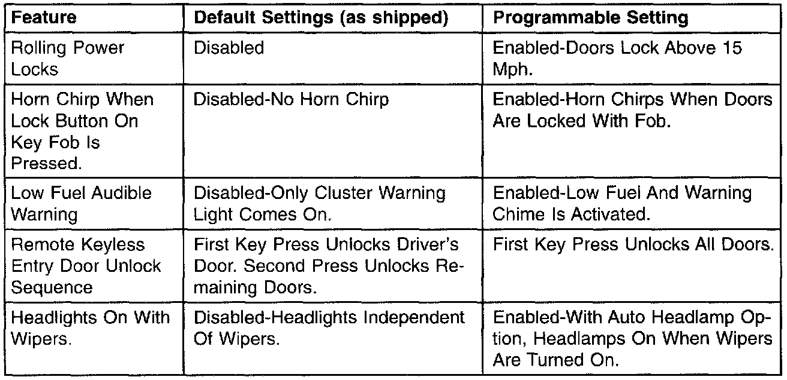

Body Control Module
BODY CONTROL MODULEThis vehicles use a body controller to control many of the body systems that previously used stand alone modules. There is only one "level" of Body Control Module (BCM) available as opposed to other vehicle lines that use a base or premium controller. To send and receive information the modules utilize the CCD bus currently used on other Chrysler vehicles. The bus is supplied bias or power from three different modules. The BCM and both the driver's door (DDM) and the passenger's door (PDM) modules can provide bus bias. Normally, the door modules only provide bias until their message has been sent, if the BCM is in a "sleep" mode. After the BCM "wakes up", it takes over biasing the bus.
Termination is provided from two modules, the Powertrain Control Module (PCM) and the BCM. As in other systems, termination is used to control the voltage level of the bus. Termination resistors used in the PCM and BCM typically measure 120 ohms of resistance each. Most bus systems use two points of termination for a back up in case of failure of one of the modules. If there are two points of termination, then total resistance of the bus circuit would equal approximately 60 ohms. This measurement could be made at the DLC after the bus becomes inactive.
The body control module provides or supports the following features:
- Intermittent Wipe control
- Door, Hood, Liftgate, Rear Glass Ajar Status
- Reading and Transmitting of External Temperature
- A/C Select Switch Status
- Chime
- Courtesy Lamps (including halo) with time-out feature
- Automatic Headlamp Control
- Headlamp Time Delay
- Automatic Funeral Mode (with automatic headlamp only)
- Gulf Coast Country Overspeed Warning
- Illuminated Entry
- Instrument Panel Dimming
- Vehicle Theft Security System with Panic Mode
- Door Lock Inhibit (key in ignition or headlamps/parklamps on)
- Electronic Odometer Support
- Brake Pressure/Park Brake Switch diagnostics
- High Beam Indicator
- Seatbelt Reminder
- Speed Sensitive Intermittent Wiper Control
- Fog Lamp Control
- Remote Radio Controls and Radio Support
- Mechanical Instrument Cluster Support
- BCM Diagnostic Support
- VIC (vehicle information center) support
- Liftgate Courtesy Lamp Disable
- Rear Window Defogger Control
The BCM receives information over the CCD Bus from the PCM in order to support certain features. The required information is as follows:
- Engine RPM
- Injector on Time and Distance Pulses
- Vehicle Speed
- Engine and Battery Temperature
- Charging System Failure, Engine Temperature Limp-In, VTSS Arming Status
- Engine Model
- "Check Engine" lamp status
The BCM provides the PCM with information on the A/C switch status and the `OK to Start' or VTSS status.

The BCM has several programmable features. These features are enabled and disabled by using the DRB. See the chart.